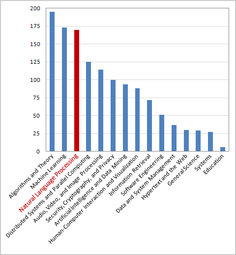
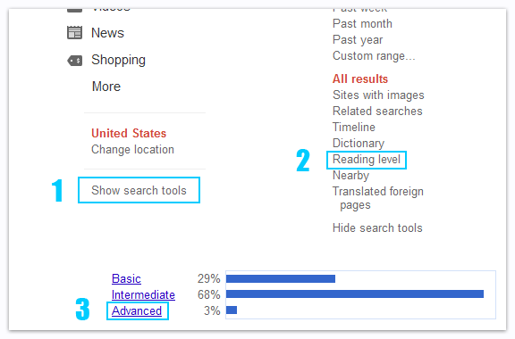

With all the patents, research, and academic papers that are attributed to Google/Googlers, especially in the area of natural language processing, you would probably guess that Google is really good at understanding English. I mean, just looking at this list of papers written by Googlers should give you an idea of the relative importance of this topic. Or…just check out this amazing graph I made for the sole purpose of helping you understand said importance.

Considering the fact that Google has been obsessing over natural language for something like 15 years–combined with the fact that they have more query logs, search history, and indexed content than any other organization in the World–you might expect them to ace a test question like:
Please sort the following documents into 3 groups (Basic, Intermediate, and Advanced), depending on their reading level difficulty.
Seems simple enough, right? So I tested Google, using the search query [darren slatten]. According to Google, only 3% of the documents in its index (that are relevant to [darren slatten]) are considered to be “Advanced” reading level material. Curious to see what Google marked as “Advanced,” I clicked to filter out everything else. The results were nothing short of embarrassing (for Google, not me). Here is how the top 10 results looked:
- scraper site that picked up a post that contained my name
- a directory of people that contains someone with the first name “Darren” and someone with the last name “Slatten,” but doesn’t mention me specifically anywhere (henceforth written as “a directory of names”)
- a directory of names (Excel spreadsheet format)
- a directory of names (Excel spreadsheet format)
- a directory of names
- a directory of names
- a directory of names
- a directory of names
- a directory of names (site appears to be Polish or Swedish, judging by the snippet, but I couldn’t get the page to load)
- a directory of names (site is in Spanish)
If you want to try this test with your own search query, here are the steps (at least until Google changes their entire search UI…probably 5 minutes after I publish this article):

What results did you get? Is it just me or does Google suck?